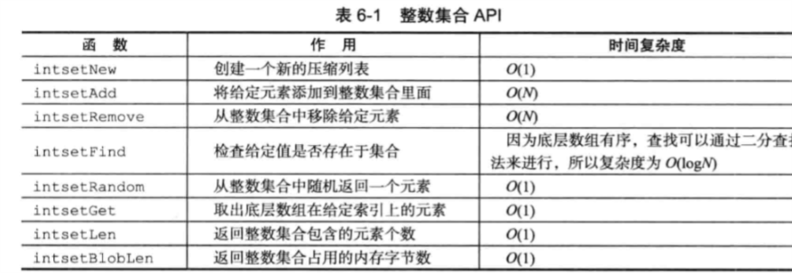

Redis设计与实现笔记五
整数集合
整数集合是集合键的底层实现之一，当一个集合只包含整数值元素，并且这个集合的元素数量不多时，Redis就会使用整数集合作为集合键的底层实现
整数集合实现
用于保存整数值的集合抽象数据结构，可以保存类型为int16_t、int32_t、int64_t的整数值，并且保证不会出现重复元素
1 | typedef struct intset { |
contents数组是整数集合的底层实现：整数集合的每个元素都是contents数组的一个数组项，各个项在数组中按值的大小从小到大有序排列，并且数组不包含任何重复项
升级
当新元素类型比整数集合现有所有元素的类型都要长时候，整数集合需要先升级再把新元素添加
分为三步：
- 根据新元素，扩展整数集合底层数组的空间大小，并为新元素分配空间
- 将底层数组现有的所有元素都转换成与新元素相同的类型，并将类型转换后的元素放在正确位上，维持有序性质不变
- 将新元素添加到底层数组里面
升级的好处
- 提升灵活性
- 节约内存
降级
整数集合不支持降级操作，一旦对数组进行了升级，编码就会一直保持升级后的状态
整数集合API



原文作者: Yang Peng
原文链接: http://ylovex.cn/2019/07/08/Redis设计与实现笔记五/
版权声明: 转载请注明出处(必须保留作者署名及链接)